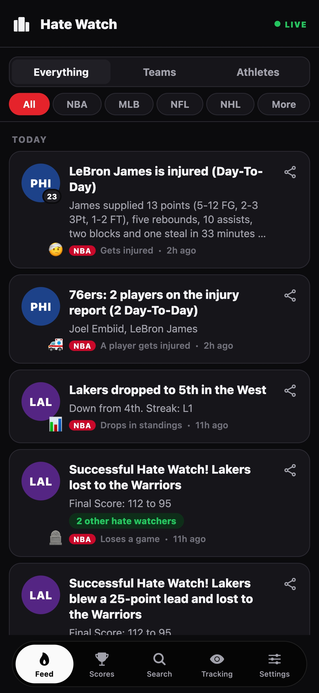

Search results video, animated mockups
Same 3:2 frame as the static search graphic (3840 x 2560). Each one is a 12 second loop that starts and ends on the same picture, so Apple's endless loop has no jump. Replay restarts it.

Only the last word changes (fail, choke, fold, melt down, blow it, fail), the same rolling word as the header video and the website. The line re-centres as the word gets longer or shorter. Calmest of the three.
The app bar and tabs stay put while the alerts slide up under them, then slide back. Shows the product, says "fail" once. The headline never changes, so this is the safest if a still headline is what you want people to read in search.
Each time the word changes, the feed scrolls to the next alert, so it reads as alerts landing as rivals fail. Busiest; the scroll back to the top at the end takes longer than the other steps so the loop closes smoothly.
Fit with Apple's search results video spec
Checked against Apple's creative assets specifications (fetched 2026-11-04). The file items are confirmed with ffprobe once one is picked and rendered.
| Aspect ratio | 3:2. Frame is 3840 x 2560, the maximum Apple takes (1920 x 1280 minimum). |
| Frame rate | 30 fps (Apple takes 30 or 60). |
| Length | 12 s (Apple takes 5 to 30 s). |
| Format | .mp4, H.264 (Apple takes .mov, .m4v and .mp4). |
| Looping | Apple loops it, so the last frame equals the first. Built in all three. |
| Sound | Muted in search and viewers can't unmute. A silent track is attached, nothing is lost. |
| Content | Search video is not an App Preview, so no Guideline 2.3.4 screen-capture rule. The phone frame is the real feed screenshot already used in the static graphic. |